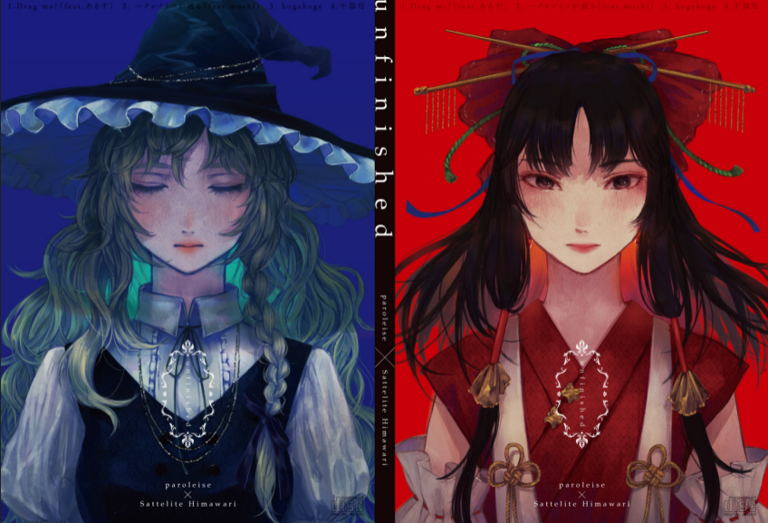

Circle(s): Paroleise × Satellite Himawari
Album: unfinished
Release Date: May 5, 2019
Arrangement: あるす (Arusu)
Vocals: あるす (Arusu)
Original Title: 少女綺想曲 〜 Dream Battle ／ 春色小径 〜 Colorful Path
Source of Lyrics: Lyrics booklet accompanying album
Source of Song Info: Official unfinished Album Website
| Japanese | English |
|---|---|
|
You don't regard the words "I love you" as having form And yet, alongside a body so hot that it could melt, you mix them together with words like "I believe in you"
With your stupidity that permits your ridiculous fancies,
with your incorrigible uselessness,
with your shoddy magic,
just trick me already
|
|
Our fantasies are just the scraps of absurd delusions rotted
by lust Love and hate submerged in ephemeral feelings, paint it over with the deep colour that remains insane
Someday the two of us will be so close to drowning in our
selfish desires that we surely
won't even be able to
breathe
While you say "The shape of our love, its only just a bit
odd, only that, so why..." |
|
I love you, go die |
|
Our fantasies are just the scraps of absurd delusions rotted
by lust Love and hate submerged in ephemeral feelings, paint it over with the colour of our still insane love
Someday the two of us will be so close to drowning in our
selfish desires that we surely won't
even be able to
breathe
The form of our love, its only just a bit odd, only that |
|
|
Its not as if I have much more feelings I want to tell you
about, but The picture book I received some time ago still has pages left over, so why not just a little more We'll surely lose ourselves in our desires to the point that our words will fail us; at that time, The feeling known as "love", if even just a little bit, I hope I can convey
it to you easily
Goodbye, I hope you stay well
|